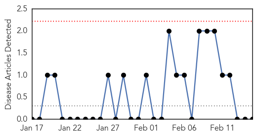
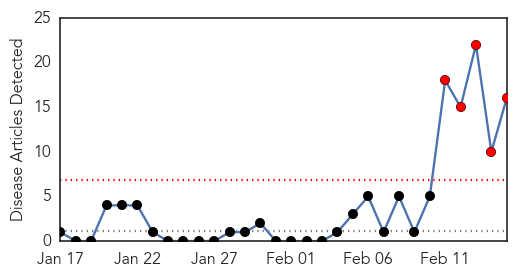

Mumps
30-Day Web Trend
0 alerts, 0 warnings

30-Day Twitter Trend
0 alerts, 0 warnings

Article Locations

Article Confidences

Top Articles:
-
No articles found for Feb 15, 2015
Top Tweets:
-
No tweets found for Feb 15, 2015
MERS
30-Day Web Trend
5 alerts, 0 warnings

30-Day Twitter Trend
2 alerts, 0 warnings

Article Locations
Article Confidences

Top Articles:
- 0.999
- Eleven People Linked To Philippines MERS Case Show Symptoms -WHO
- 0.998
- 2 more suspected MERS cases under isolation
- 0.998
- 10 cleared of Merscov, one still in isolation
- 0.997
- Two more found to have MERS-CoV symptoms
- 0.995
- 86 co-passengers of Filipino nurse test negative for MERS-CoV
- 0.994
- 1 of 11 quarantined 'probable case' of MERS-CoV
- 0.991
- 11 in contact with Filipino nurse cleared of MERS-CoV, 3 under observation
- 0.987
- OFWs told: Avoid camels
- 0.981
- Pinay nurse infected with MERS-CoV remains in stable condition
- 0.975
- MERS-CoV patient doing well, 3 others being monitored
- 0.968
- 2 on nurse’s flight show signs of MERS-CoV
- 0.940
- WHO to send experts to Saudi Arabia to tackle MERS
- 0.940
- WHO to send experts to Saudi Arabia to tackle MERS
- 0.916
- Don't give Sacrament of the Sick to MERS-CoV patients
- 0.902
- Woman with MERS symptoms confined
- 0.897
- Zamboanga Today Online, the most read newspaper in Zamboanga City
Top Tweets:
- 0.717
- AFD Blog `Saudi MOH: 3 Additional MERS Cases' MERS-CoV http://t.co/Ljtls33RvX